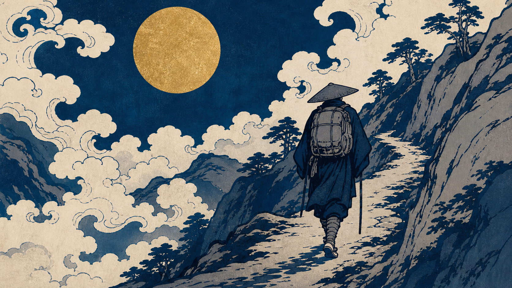

essay-episode ・ Step8.5 タイトル決定（台本確定後）
第34話 タイトル3案（HUNTER×HUNTER × 旅）
確定した台本の山場から起こしました。規約＝名前先出し・好奇心ギャップ・【第N話・卦】末尾・結末ネタバレ禁止（"始まりの矛盾"を残す）・主語はキャラ個人。

第34話キービジュアル。テーマ「逃げた先にも、自分はついてくる」。
A ★推奨（フックの体現・キルア）
キルアは"暗殺者の家"から逃げ切った。でも"逃げ癖"は、頭の中までついてきた【第三十四話・旅】
狙い：本編テーマ「逃げた先にも自分はついてくる」を最も体現。キルア先頭＋「頭の中まで?」の好奇心（針の伏線）＋ネタバレなし。3人の中でいちばん刺さる糸。
B（普遍の痛点・ゴン）
ゴンは"ここではないどこか"へ旅立った。でも旅は、自分を置いていかせてくれない【第三十四話・旅】
狙い：ゴン先頭＋「ここではないどこか」で現代人の自分探しに直結。余韻の断定と接続。主役の王道。
C（易経の旗・クラピカ）
クラピカが握りしめた"復讐"を、易経は"いちばん危うい手"と呼んだ【第三十四話・旅】
狙い：クラピカ先頭＋易経を前に出す（差別化の旗）＋「なぜ危うい?」の好奇心。追加したクラピカ回収と一致。
タイトル規則チェック（3案共通）：✅キャラ名先頭 ✅好奇心ギャップ ✅【第三十四話・旅】末尾 ✅結末ネタバレなし（始まりの矛盾を残す） ✅「〜理由」不使用 ✅【衝撃】/数字釣りなし
👉 どのタイトルにしますか？
A / B / C から1つ選んでください（文言の微修正もOK）。私の推し＝A（フック体現＋好奇心最大）。決定後、サムネ題字・概要欄・ショート題字に伝播させます。
選定後の流れ：Tier Aサムネ生成→概要欄→ショート2本→TikTok縦ロード＋カバー、を全部作り切ってから（アップはまだ）まとめてご承認いただきます。